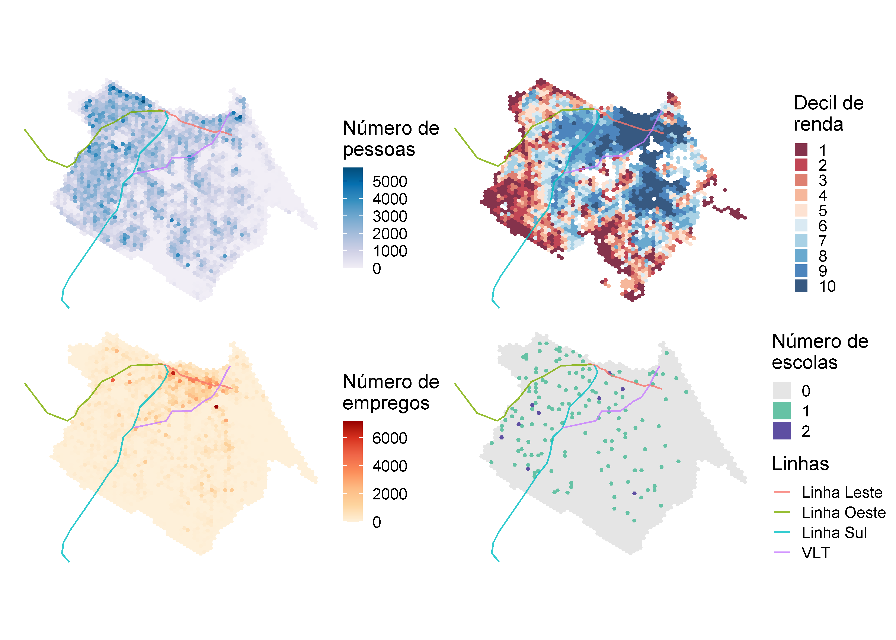
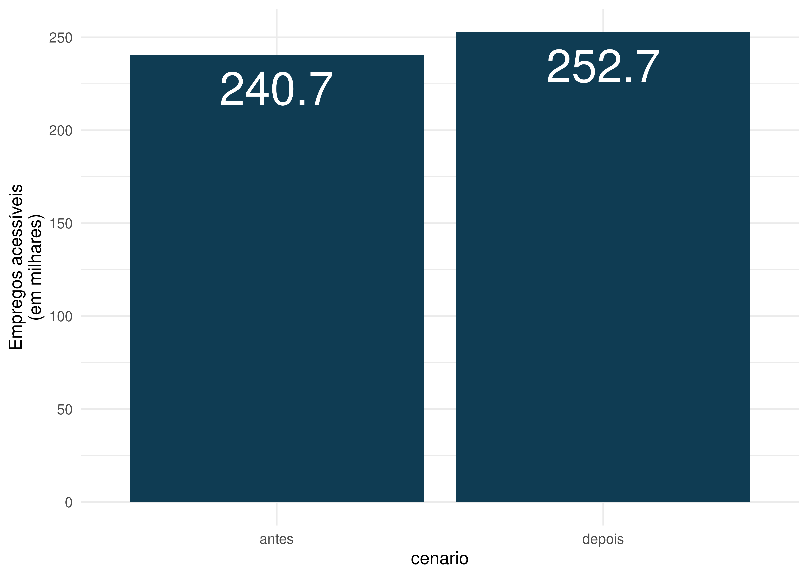
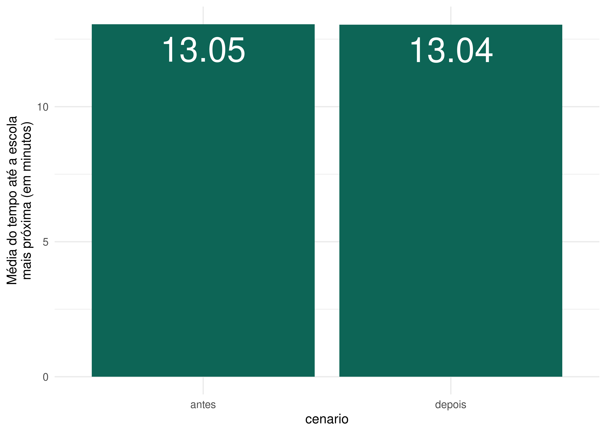
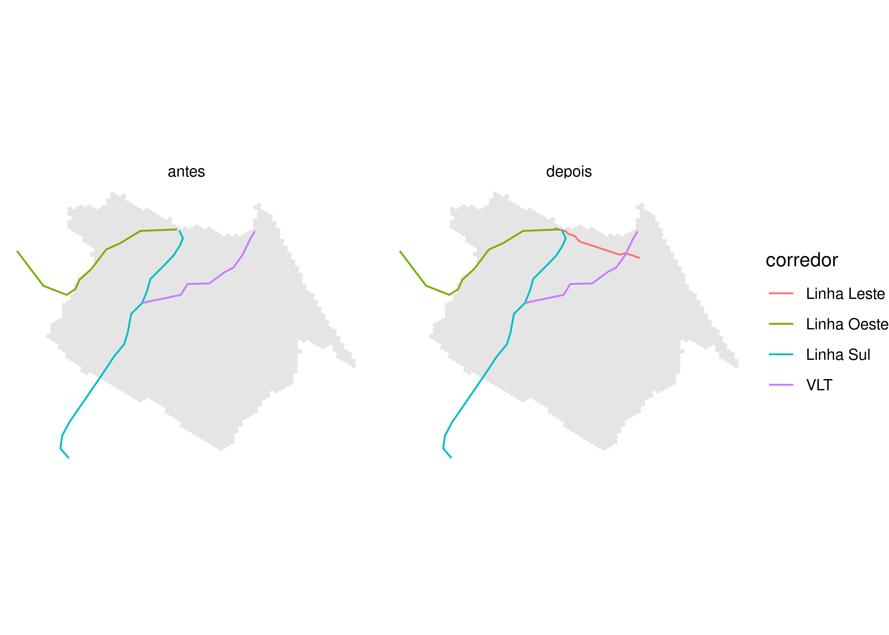
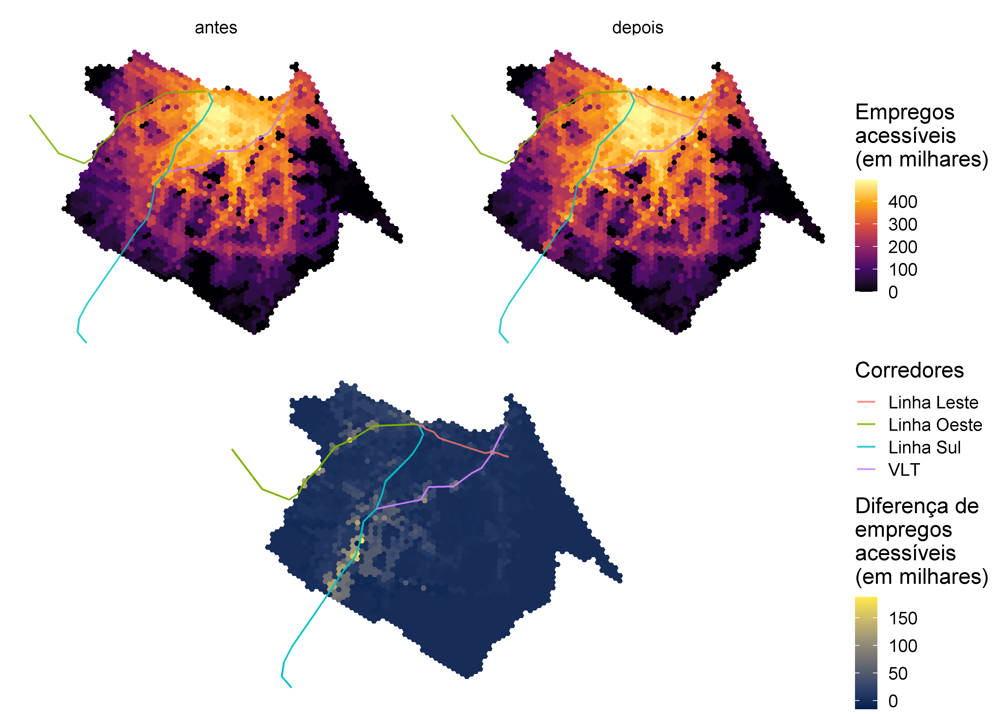
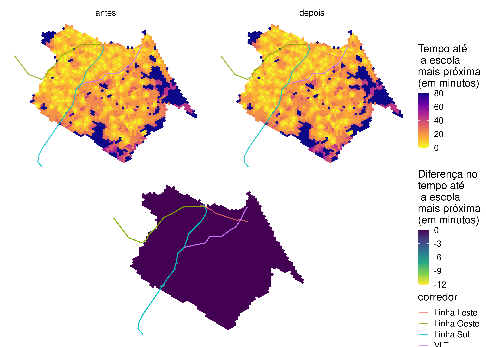
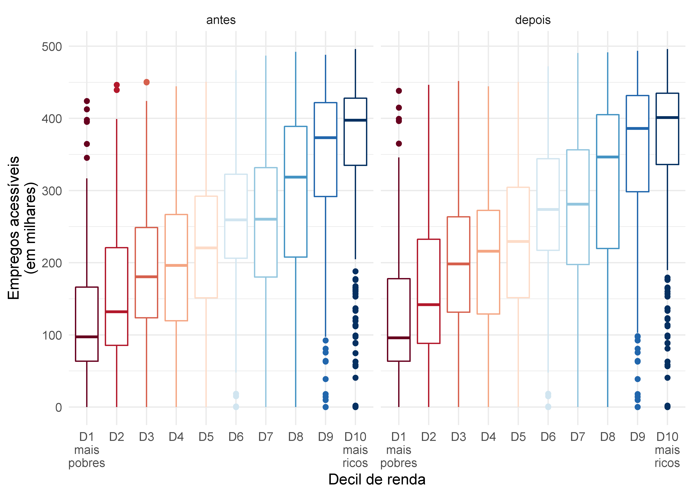
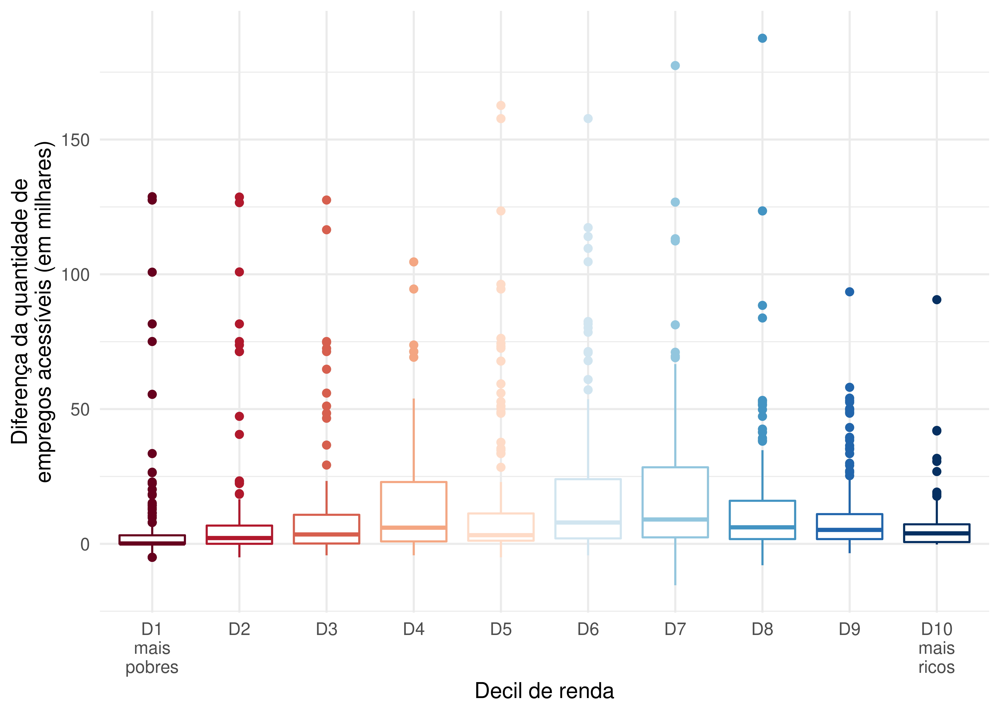
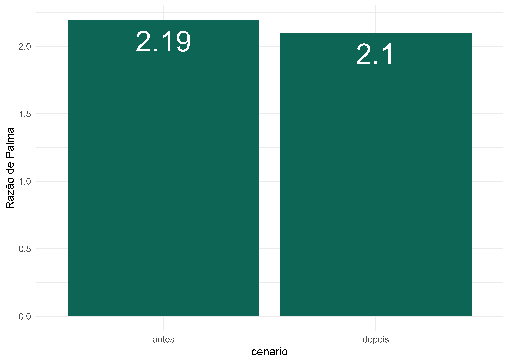

6 Comparando a acessibilidade entre dois cenários de transporte
Neste capítulo, vamos ilustrar como usar de forma conjunta o material ensinado nos capítulos anteriores para medir o impacto de um projeto de infraestrutura de transporte sobre a acessibilidade urbana. Para avaliar o impacto de projetos de transporte, precisaremos comparar os níveis de acessibilidade antes e depois da implementação do projeto. Precisamos, portanto:
- Utilizar diferentes conjuntos de arquivos GTFS e fazer as edições necessárias para representar os cenários antes e depois da implementação do projeto;
- Calcular duas matrizes de tempo de viagem, uma antes e outra depois do investimento;
- Calcular os níveis de acessibilidade, tanto antes quanto depois do investimento;
- Comparar as condições de acessibilidade em cada cenário, examinando como os impactos se distribuem espacialmente e entre populações de diferentes níveis socioeconômicos.
Neste capítulo, vamos cobrir este passo-a-passo em detalhes, começando por uma breve apresentação do nosso estudo de caso.
6.1 Apresentação do estudo de caso
Como estudo de caso, vamos fazer uma avaliação do projeto de construção da Linha Leste do metrô de Fortaleza (Figura 6.1). O município de Fortaleza é a capital do estado do Ceará, localizado na região Nordeste do Brasil. Com uma população estimada de 2,7 milhões habitantes, Fortaleza é a quinta cidade mais populosa do país
Um dos grandes investimentos recentes no sistema de transporte de Fortaleza é a Linha Leste do metrô. O traçado da Linha Leste possui 7,3 km de extensão e liga o Centro da cidade ao bairro Papicu, permitindo a integração das linhas de metrô Sul e Oeste com corredores de Veículo Leve sobre Trilhos (VLT) e o terminal de ônibus no Papicu (Figura 6.2). Como a Linha Leste ainda se encontra em construção até o momento da publicação deste livro, a análise deste capítulo trata de uma avaliação ex-ante - ou seja, em que avaliamos o futuro impacto de um projeto sobre a acessibilidade urbana. Este tipo de análise se contrapõe a avaliações ex-post, usadas para avaliar o impacto causado por projetos já implementados.

É importante notar que a implementação deste projeto também será acompanhada de mudanças nas frequências das linhas Sul e Oeste do metrô e no corredor de VLT Parangaba-Mucuripe, além do racionamento do sistema de ônibus municipais, conforme o Plano de Acessibilidade Sustentável de Fortaleza (Pasfor)1. Para fins didáticos, no entanto, as mudanças relativas ao racionamento do sistema de ônibus não foram incorporadas aos cenários da nossa análise. Portanto, o estudo de caso que apresentamos aqui representa um cenário simplificado, que considera apenas a implementação da Linha Leste e as mudanças nas frequências das demais linhas do metrô e do VLT. Para uma avaliação mais completa, que leva em consideração todas as mudanças previstas no Pasfor, por favor veja o trabalho de Braga et al. (2022).
Como mostra a Figura 6.3, a população de Fortaleza está majoritariamente distribuída na região central e na porção oeste da cidade, embora haja alguns pontos de alta densidade populacional no sudeste da cidade. Via de regra, a população de mais alta renda (em tons de azul no mapa da distribuição de decis de renda) está localizada na região do centro expandido e sudeste do município, enquanto as populações de menor renda (em tons de vermelho) estão principalmente localizadas nas regiões periféricas ao sul e a oeste. Os empregos formais na cidade se distribuem principalmente ao longo de grandes avenidas, com uma maior concentração no centro da cidade. Em contraste, as escolas públicas de nível médio têm uma distribuição espacial mais equilibrada por todo território.

6.2 Dados GTFS usados na análise
Nesta análise, usaremos os arquivos GTFS disponibilizados pela Empresa de Transporte Urbano de Fortaleza (Etufor) e a Empresa do Metrô de Fortaleza (Metrofor). Esses dados descrevem o sistema de transporte público operante na cidade de Fortaleza em outubro de 2019. Para ter acesso a esses dados,usamos o código abaixo, que baixa os feeds usando o pacote {httr}:
# cria o endereço de arquivos temporários
end_metrofor <- tempfile("metrofor", fileext = ".zip")
end_etufor <- tempfile("etufor", fileext = ".zip")
# baixa dados da metrofor
httr::GET(
"https://github.com/ipeaGIT/intro_access_book/releases/download/data_1st_edition/gtfs_for_metrofor_2021-01.zip",
httr::write_disk(end_metrofor)
)# baixa dados da etufor
httr::GET(
"https://github.com/ipeaGIT/intro_access_book/releases/download/data_1st_edition/gtfs_for_etufor_2019-10.zip",
httr::progress(),
httr::write_disk(end_etufor)
)# cria o endereço do arquivo temporário
end_linha_leste <- tempfile("linha_leste", fileext = ".zip")
# baixa o GTFS da Linha Leste
httr::GET(
"https://github.com/ipeaGIT/intro_access_book/releases/download/data_1st_edition/gtfs_linha_leste.zip",
httr::write_disk(end_linha_leste)
)Os feeds da Etufor e da Metrofor não refletem as mudanças do sistema de transporte público previstas no Pasfor. Para levá-las em consideração no cenário pós-implementação, portanto, precisamos editar esses arquivos usando o pacote {gtfstools}.
Em nosso cenário simplificado, vamos considerar as mudanças de frequência no metrô e no VLT relatadas em Braga et al. (2022), com base no Pasfor: aumento da frequência da Linha Sul do metrô de quatro para dez viagens por hora, aumento da frequência da Linha Oeste do metrô de duas para cinco viagens por hora e aumento da frequência do VLT Parangaba-Mucuripe de duas para oito viagens por hora. Como vamos considerar apenas mudanças em linhas de metrô e VLT, vamos nos ater a edições no feed da Metrofor. Em primeiro lugar, precisamos ler este arquivo com a função read_gtfs() e entender como as linhas estão descritas. Para isso, vamos olhar como as tabelas routes, trips e calendar estão estruturadas.
library(gtfstools)
gtfs_metrofor <- read_gtfs(end_metrofor)
gtfs_metrofor$routes[, .(route_id, route_long_name)] route_id route_long_name
1: 8 VLT Parangaba Papicu
2: 6 Linha Sul
3: 7 Linha Oestegtfs_metrofor$trips[, .N, by = .(route_id, direction_id, service_id)] route_id direction_id service_id N
1: 7 0 4 15
2: 7 1 4 15
3: 6 0 4 63
4: 6 1 4 64
5: 8 0 4 29
6: 8 1 4 29gtfs_metrofor$calendar service_id monday tuesday wednesday thursday friday saturday sunday
1: 4 1 1 1 1 1 1 0
start_date end_date
1: 2020-01-01 2021-12-31O feed descreve três linhas distintas: os dois corredores de metrô e o corredor de VLT. Como o feed não contém uma tabela frequencies, cada rota é descrita por diversas viagens, que partem em diferentes horários do dia. Essas viagens são divididas em viagens de ida e volta, e estão todas associadas a um mesmo serviço, que opera em dias úteis e no sábado.
A estratégia que vamos usar para fazer as mudanças necessárias no feed é composta pelas seguintes etapas:
- Primeiro, vamos filtrar o feed de forma a manter apenas uma viagem por sentido para cada linha. Esta viagem servirá para nos dizer o tempo que cada viagem leva entre as suas paradas.
- Em seguida, vamos adicionar uma tabela
frequenciesao objeto GTFS, em que descreveremos a frequência de cada viagem. - Por fim, vamos “converter” os registros da recém-adicionada tabela
frequenciespara cronogramas descritos na tabelastop_times. Esta conversão servirá para manter a característica do feed original, que descreve as viagens usando apenas astop_times.
Para manter apenas uma viagem por sentido para cada linha, precisamos filtrar o feed usando a filter_by_trip_id(). Para isso, vamos identificar o primeiro registro de viagem por linha e por sentido e usar a função para manter apenas essas viagens.
# identifica a linha na tabela trips em que os primeiros registros por rota e
# por sentido estão localizados
indice <- gtfs_metrofor$trips[, .I[1], by = .(route_id, direction_id)]$V1
# seleciona o identificador de cada linha acima
viagens_selecionadas <- gtfs_metrofor$trips[indice]$trip_id
# filtra o gtfs para manter apenas as viagens acima
gtfs_filtrado <- filter_by_trip_id(
gtfs_metrofor,
trip_id = viagens_selecionadas
)
gtfs_filtrado$trips trip_id trip_headsign direction_id block_id shape_id service_id route_id
1: 4 Caucaia 0 4 7
2: 19 Moura Brasil 1 4 7
3: 34 Carlito Benevides 0 4 6
4: 96 Chico da Silva 1 4 6
5: 159 Iate 0 4 8
6: 181 Parangaba 1 4 8A fim de facilitar nossa edição, vamos mudar o id das viagens, identificando o corredor e o sentido em que elas operam. Essa mudança precisa ser feita tanto na tabela trips quanto na stop_times.
gtfs_filtrado$stop_times[
,
trip_id := data.table::fcase(
trip_id == "4", "metro_oeste_0",
trip_id == "19", "metro_oeste_1",
trip_id == "34", "metro_sul_0",
trip_id == "96", "metro_sul_1",
trip_id == "159", "vlt_0",
trip_id == "181", "vlt_1"
)
]
gtfs_filtrado$trips[
,
trip_id := data.table::fcase(
trip_id == "4", "metro_oeste_0",
trip_id == "19", "metro_oeste_1",
trip_id == "34", "metro_sul_0",
trip_id == "96", "metro_sul_1",
trip_id == "159", "vlt_0",
trip_id == "181", "vlt_1"
)
]
gtfs_filtrado$trips trip_id trip_headsign direction_id block_id shape_id service_id
1: metro_oeste_0 Caucaia 0 4
2: metro_oeste_1 Moura Brasil 1 4
3: metro_sul_0 Carlito Benevides 0 4
4: metro_sul_1 Chico da Silva 1 4
5: vlt_0 Iate 0 4
6: vlt_1 Parangaba 1 4
route_id
1: 7
2: 7
3: 6
4: 6
5: 8
6: 8Precisamos agora adicionar uma tabela frequencies que descreva a frequência de cada viagem. A especificação requer, no entanto, que listemos o headway de cada linha, e não a sua frequência. Como o headway é o inverso da frequência, precisamos dividir o intervalo de uma hora (3600 segundos) pela frequência de cada linha (10 viagens/hora para a Linha Sul, 5 viagens/hora para a Linha Oeste e 8 viagens/hora para o VLT). Como resultado, temos que os headways da Linha Sul, da Linha Oeste e do VLT passarão a ser, respectivamente, 360, 720 e 450 segundos. Com o código abaixo, criamos uma tabela frequencies com os pacotes {tibble} e {data.table}.
frequencias <- tibble::tribble(
~trip_id, ~start_time, ~end_time, ~headway_secs, ~exact_times,
"metro_oeste_0", "06:00:00", "09:00:00", 720L, 1,
"metro_oeste_1", "06:00:00", "09:00:00", 720L, 1,
"metro_sul_0", "06:00:00", "09:00:00", 360L, 1,
"metro_sul_1", "06:00:00", "09:00:00", 360L, 1,
"vlt_0", "06:00:00", "09:00:00", 450L, 1,
"vlt_1", "06:00:00", "09:00:00", 450L, 1
)
# converte tabela para data.table
data.table::setDT(frequencias)
# cria tabela frequencies no objeto gtfs com base na tabela acima
gtfs_filtrado$frequencies <- frequenciasA fim de simplificar este estudo de caso, assumimos que os headways listados são válidos no período entre 06:00h e 09:00h. Esta premissa é válida no nosso caso, pois iremos calcular as matrizes de tempo de viagem apenas durante o pico da manhã. No entanto, caso desejássemos calcular os tempos de viagens em outros períodos do dia, ou mesmo utilizar este GTFS na operação do dia-a-dia desses corredores, precisaríamos listar os headways para os demais períodos do dia, como o fora-pico, a madrugada, etc. O valor 1 da coluna exact_times estabelece que o cronograma das viagens durante o período especificado deve seguir o headway à risca, e não de forma aproximada (para mais detalhes ver a descrição da tabela frequencies no Capítulo 4).
O objeto GTFS que resulta das modificações feitas até aqui já pode perfeitamente ser utilizado para o cálculo de matrizes de tempo de viagem. Buscando retomar a característica inicial do feed de não possuir uma tabela frequencies, no entanto, vamos “converter” os registros dessa tabela em cronogramas descritos na tabela stop_times. Para isso, usamos a função frequencies_to_stop_times(). Como todas as viagens do feed são convertidas, a tabela frequencies é removida do objeto.
gtfs_filtrado <- frequencies_to_stop_times(gtfs_filtrado)
gtfs_filtrado$frequenciesNULLPara verificar se a operação deu certo, vamos olhar para as viagens da Linha Oeste no sentido Caucaia (cujo direction_id é 0). Como esta linha deve ter uma frequência de 5 viagens/hora entre 06:00h e 09:00h, a tabela trips deve conter exatamente 16 viagens relacionadas a ela (5 viagens/hora durante 3 horas, mais uma viagem começando às 09:00h).
# seleciona apenas as viagens da linha oeste do metrô
metro_linha_oeste <- gtfs_filtrado$trips[grepl("metro_oeste_0", trip_id)]
# checa número de viagens
nrow(metro_linha_oeste)[1] 16# checa identificador de cada viagem
metro_linha_oeste$trip_id [1] "metro_oeste_0_1" "metro_oeste_0_2" "metro_oeste_0_3" "metro_oeste_0_4"
[5] "metro_oeste_0_5" "metro_oeste_0_6" "metro_oeste_0_7" "metro_oeste_0_8"
[9] "metro_oeste_0_9" "metro_oeste_0_10" "metro_oeste_0_11" "metro_oeste_0_12"
[13] "metro_oeste_0_13" "metro_oeste_0_14" "metro_oeste_0_15" "metro_oeste_0_16"A tabela stop_times, por sua vez, deve listar essas viagens partindo a cada 12 minutos (o equivalente a um headway de 450 segundos). Vamos verificar, portanto, o primeiro registro do cronograma de cada uma das viagens listadas acima.
viagens_metro_oeste <- metro_linha_oeste$trip_id
# identifica a linha na tabela stop_times em que estão os primeiros registros de
# cada uma das viagens acima
indice_viagens <- gtfs_filtrado$stop_times[
trip_id %in% viagens_metro_oeste,
.I[1],
by = trip_id
]$V1
gtfs_filtrado$stop_times[indice_viagens, .(trip_id, departure_time)] trip_id departure_time
1: metro_oeste_0_1 06:00:00
2: metro_oeste_0_2 06:12:00
3: metro_oeste_0_3 06:24:00
4: metro_oeste_0_4 06:36:00
5: metro_oeste_0_5 06:48:00
6: metro_oeste_0_6 07:00:00
7: metro_oeste_0_7 07:12:00
8: metro_oeste_0_8 07:24:00
9: metro_oeste_0_9 07:36:00
10: metro_oeste_0_10 07:48:00
11: metro_oeste_0_11 08:00:00
12: metro_oeste_0_12 08:12:00
13: metro_oeste_0_13 08:24:00
14: metro_oeste_0_14 08:36:00
15: metro_oeste_0_15 08:48:00
16: metro_oeste_0_16 09:00:00A operação de “conversão” da tabela frequencies para a stop_times, portanto, funcionou corretamente, e podemos utilizar o nosso feed modificado no cálculo da matriz de tempo de viagem. Para isso, no entanto, precisamos salvar o objeto GTFS na memória, em formato .zip, assim como estão salvos os demais dados GTFS que serão utilizados no estudo de caso. Para isso, usamos a função write_gtfs().
end_metrofor_modificado <- tempfile("metrofor_modificado", fileext = ".zip")
write_gtfs(gtfs_filtrado, end_metrofor_modificado)Temos, agora, quatro arquivos de GTFS distintos:
- O feed da Etufor, que descreve o sistema de ônibus que operava em outubro de 2019;
- O feed da Metrofor, que descreve a operação em outubro de 2019 das linhas Sul e Oeste do metrô e do VLT Parangaba-Mucuripe;
- O feed modificado da Metrofor, que descreve a futura operação das linhas Sul e Oeste do metrô e do VLT Parangaba-Mucuripe como previsto no Pasfor;
- O feed da Linha Leste, que descreve a futura operação da Linha Leste do metrô.
Esses quatro arquivos GTFS serão usados em conjunto para calcular as condições de acessibilidade de Fortaleza antes e depois da implementação da Linha Leste. No cenário pré Linha Leste, vamos calcular as matrizes de tempo de viagem com base apenas nos feeds de outubro de 2019 da Metrofor e da Etufor, que representam a típica operação de transporte público da cidade antes da implementação do novo corredor. No cenário pós implementação, consideraremos o feed da Etufor, o feed modificado da Metrofor, com as frequências do metrô e do VLT alteradas, e o GTFS da Linha Leste, incorporando à análise a operação planejada desta linha após sua finalização.
6.3 Cálculo das matrizes de tempo de viagem
Tendo feitas as edições necessárias ao GTFS da Metrofor e definido os dados GTFS que vamos usar em cada um dos cenários de transporte público, o próximo passo é calcular as matrizes de tempo de viagem, que posteriormente serão utilizadas para estimar os níveis de acessibilidade. Para isso, vamos utilizar a função travel_time_matrix() do pacote {r5r}, como apresentado anteriormente no Capítulo 3..
Antes de calcular as matrizes, no entanto, precisamos organizar os nossos arquivos na estrutura que o {r5r} requer. Com o código abaixo, criamos uma pasta separada para cada um dos nossos cenários (antes e depois) e salvamos nessas pastas os dados necessários para o roteamento:
# cria pasta raiz da análise de dados
pasta_analise <- "analise_de_impacto"
dir.create(pasta_analise)
# cria pasta dos cenários
pasta_antes <- file.path(pasta_analise, "antes")
pasta_depois <- file.path(pasta_analise, "depois")
dir.create(pasta_antes)
dir.create(pasta_depois)
# copia os arquivos para pasta do cenário "antes"
file.copy(from = end_etufor, to = file.path(pasta_antes, "etufor.zip"))
file.copy(from = end_metrofor, to = file.path(pasta_antes, "metrofor.zip"))
# copia os arquivos para pasta do cenário "depois"
file.copy(from = end_etufor, to = file.path(pasta_depois, "etufor.zip"))
file.copy(
from = end_metrofor_modificado,
to = file.path(pasta_depois, "metrofor_modificado.zip")
)
file.copy(
from = end_linha_leste,
to = file.path(pasta_depois, "linha_leste.zip")
)
# visualiza esquema de arquivos na pasta
fs::dir_tree(pasta_analise)analise_de_impacto
├── antes
│ ├── etufor.zip
│ └── metrofor.zip
└── depois
├── etufor.zip
├── linha_leste.zip
└── metrofor_modificado.zipPara estimarmos o tempo de viagem na nossa área de estudo, precisamos ainda de um arquivo com os dados do OpenStreetMap representando a rede viária local, em formato .pbf. Opcionalmente, iremos utilizar também um arquivo representando a topografia local, em formato .tif. Esses arquivos, assim como os dados GTFS, estão disponíveis para download no repositório do livro. Partindo do pressuposto que a implementação da Linha Leste não vai afetar o traçado das ruas e calçadas na região, bem como a topografia local, podemos usar os mesmos arquivos para o cálculo das duas matrizes de tempo de viagem. Com o código abaixo, baixamos esses dados e copiamos os arquivos para as pastas dos dois cenários de transporte:
# cria endereço temporário dos arquivos na máquina local
end_pbf <- tempfile("rede_viaria", fileext = ".osm.pbf")
end_tif <- tempfile("topografia", fileext = ".tif")
# download dos dados de OSM
httr::GET(
"https://github.com/ipeaGIT/intro_access_book/releases/download/data_1st_edition/for_2020.osm.pbf",
httr::write_disk(end_pbf)
)# download dos dados de topografia
httr::GET(
"https://github.com/ipeaGIT/intro_access_book/releases/download/data_1st_edition/topografia3_for.tif",
httr::write_disk(end_tif)
)# copia arquivo para as pastas dos cenários antes e depois
file.copy(from = end_pbf, to = file.path(pasta_antes, "rede_viaria.osm.pbf"))
file.copy(from = end_pbf, to = file.path(pasta_depois, "rede_viaria.osm.pbf"))
file.copy(from = end_tif, to = file.path(pasta_antes, "topografia.tif"))
file.copy(from = end_tif, to = file.path(pasta_depois, "topografia.tif"))fs::dir_tree(pasta_analise)analise_de_impacto
├── antes
│ ├── etufor.zip
│ ├── metrofor.zip
│ ├── rede_viaria.osm.pbf
│ └── topografia.tif
└── depois
├── etufor.zip
├── linha_leste.zip
├── metrofor_modificado.zip
├── rede_viaria.osm.pbf
└── topografia.tifCom os dados organizados nas pastas, podemos começar o cálculo das matrizes de tempo de viagem. A primeira etapa é construir a rede de transporte multimodal usada pelo {r5r} no roteamento a partir dos dados da rede viária, do sistema de transporte público e de topografia. Isto é feito com o comando setup_r5(), que também retorna uma conexão com o R5. Com o código abaixo, criamos duas redes, uma para cada cenário:
# aloca a memória disponível para o Java
options(java.parameters = "-Xmx4G")
# carrega a biblioteca
library(r5r)
# cria a rede de transporte multimodal de cada cenário
con_r5r_antes <- setup_r5(pasta_antes, use_elevation = TRUE, verbose = FALSE)
con_r5r_depois <- setup_r5(pasta_depois, use_elevation = TRUE, verbose = FALSE)Criadas as redes de transporte de cada cenário, prosseguimos para o cálculo das matrizes de tempo de viagem. Nesta etapa, vamos utilizar como origens e destinos os centróides de uma grade espacial de hexágonos de Fortaleza, disponibilizada pelo pacote {aopdata} (mais detalhes sobre o pacote são apresentados na Seção 5). Cada hexágono tem uma área de 0,11 km², aproximadamente um quarteirão, o que permite uma análise espacial bem detalhada.
Para comparar adequadamente os dois cenários, precisamos calcular as duas matrizes considerando os mesmos parâmetros de viagem. Aqui, vamos considerar viagens a pé ou por transporte público, permitir distâncias de caminhada de no máximo 800 metros nas pernas de acesso e egresso das paradas de transporte público, e limitar o tempo máximo de viagem em até 60 minutos. Vamos considerar o horário de partida de 07:00h, durante o horário de pico de uma típica segunda-feira de operação:
# baixa os dados da grade espacial
grade_fortaleza <- aopdata::read_grid(city = "Fortaleza")
# calcula os centróides das células da grade
pontos <- sf::st_centroid(grade_fortaleza)
# renomeia o nome da coluna com o id das células
names(pontos)[1] <- "id"
# calcula a matriz de tempo de viagem do cenário "antes"
matriz_antes <- travel_time_matrix(
con_r5r_antes,
origins = pontos,
destinations = pontos,
mode = c("WALK", "TRANSIT"),
departure_datetime = as.POSIXct(
"02-03-2020 07:00:00",
format = "%d-%m-%Y %H:%M:%S"
),
max_walk_dist = 800,
max_trip_duration = 60,
verbose = FALSE,
progress = FALSE
)
# calcula a matriz de tempo de viagem do cenário "depois"
matriz_depois <- travel_time_matrix(
con_r5r_depois,
origins = pontos,
destinations = pontos,
mode = c("WALK", "TRANSIT"),
departure_datetime = as.POSIXct(
"02-03-2020 07:00:00",
format = "%d-%m-%Y %H:%M:%S"
),
max_walk_dist = 800,
max_trip_duration = 60,
verbose = FALSE,
progress = FALSE
)
head(matriz_antes) fromId toId travel_time
1: 89801040323ffff 89801040323ffff 2
2: 89801040323ffff 89801040327ffff 22
3: 89801040323ffff 8980104032fffff 14
4: 89801040323ffff 89801040333ffff 9
5: 89801040323ffff 89801040337ffff 30
6: 89801040323ffff 8980104036fffff 25head(matriz_depois) fromId toId travel_time
1: 89801040323ffff 89801040323ffff 2
2: 89801040323ffff 89801040327ffff 22
3: 89801040323ffff 8980104032fffff 14
4: 89801040323ffff 89801040333ffff 9
5: 89801040323ffff 89801040337ffff 30
6: 89801040323ffff 8980104036fffff 25À primeira vista, nossas matrizes parecem iguais: todos os tempos de viagem na amostra de pares mostrados acima são idênticos. Isto ocorre porque o projeto de expansão do metrô fica restrito a uma área relativamente pequena, no centro da cidade de Fortaleza, e as mudanças nas frequências do VLT e das linhas Sul e Oeste do metrô afetam principalmente as imediações desses corredores. Assim, muitos deslocamentos entre regiões da cidade de fato não são afetados pela implementação do corredor e das mudanças de frequência. Diversos pares origem-destino, no entanto, têm os tempos de viagens entre eles impactados:
# une os tempos de viagem dos dois cenários
comparacao <- merge(
matriz_antes,
matriz_depois,
by = c("fromId", "toId"),
suffixes = c("_antes", "_depois")
)
# mostra apenas os pares OD que cujo tempo que os distanciam diminuiu
comparacao[travel_time_antes < travel_time_depois] fromId toId travel_time_antes travel_time_depois
1: 8980104092fffff 8980104531bffff 48 50
2: 8980104092fffff 8980104536bffff 47 48
3: 8980104092fffff 898010453c7ffff 44 46
4: 8980104092fffff 8980104e803ffff 48 50
5: 8980104092fffff 8980104e807ffff 57 59
---
9070: 8980104eecfffff 8980104e87bffff 51 53
9071: 8980104eecfffff 8980104e8bbffff 56 58
9072: 8980104eecfffff 8980104ea2bffff 56 58
9073: 8980104eecfffff 8980104eaafffff 56 58
9074: 8980104f1abffff 8980104e87bffff 58 596.4 Cálculo da acessibilidade nos cenários antes e depois
O cálculo dos níveis de acessibilidade nos dois cenários é muito simples, exigindo apenas um processamento básico dos dados e a aplicação de uma das funções de cálculo de acessibilidade do pacote {accessibility}. Para facilitar o tratamento dos dados, vamos empilhar as matrizes de tempo de viagem dos dois cenários em uma única tabela, identificando cada cenário com a coluna cenario:
# combina as matrizes de tempo de viagem dos cenários antes e depois
matriz <- rbind(matriz_antes, matriz_depois, idcol = "cenario")
matriz[, cenario := factor(cenario, labels = c("antes", "depois"))]
matriz cenario fromId toId travel_time
1: antes 89801040323ffff 89801040323ffff 2
2: antes 89801040323ffff 89801040327ffff 22
3: antes 89801040323ffff 8980104032fffff 14
4: antes 89801040323ffff 89801040333ffff 9
5: antes 89801040323ffff 89801040337ffff 30
---
3380585: depois 8980107b6dbffff 8980107b6cbffff 8
3380586: depois 8980107b6dbffff 8980107b6cfffff 14
3380587: depois 8980107b6dbffff 8980107b6d3ffff 9
3380588: depois 8980107b6dbffff 8980107b6d7ffff 15
3380589: depois 8980107b6dbffff 8980107b6dbffff 0Para calcular os níveis de acessibilidade, precisamos de uma tabela com os dados de uso do solo da cidade de Fortaleza. Podemos baixar uma tabela com esses dados usando a função read_landuse() do pacote {aopdata}, que traz dados de contagem populacional e de oportunidades em cada um dos hexágonos que compõem a grade espacial baixada anteriormente.
# baixa dados de uso do solo em fortaleza
dados_fortaleza <- aopdata::read_landuse(
city = "Fortaleza",
showProgress = FALSE
)A fins de demonstração, vamos calcular a acessibilidade a postos de trabalho e a escolas públicas de ensino médio na nossa área de estudo. Os dados do total de empregos e de escolas públicas de nível médio em cada hexágono estão listados nas colunas T001 e E004, respectivamente. Vamos renomeá-las para facilitar sua identificação e manter apenas as colunas necessárias na tabela de dados de uso do solo. Vamos manter também as colunas P001, de população total em cada hexágono, e R003, do decil de renda em que cada hexágono se encontra, que serão úteis mais à frente:
# renomeia colunas
colunas_mantidas <- c("id", "empregos", "escolas", "populacao", "decil")
data.table::setnames(
dados_fortaleza,
old = c("id_hex", "T001", "E004", "P001", "R003"),
new = colunas_mantidas
)
# deleta as demais colunas que não serão usadas
dados_fortaleza[, setdiff(names(dados_fortaleza), colunas_mantidas) := NULL]
dados_fortaleza id populacao decil empregos escolas
1: 89801040323ffff 30 1 0 0
2: 89801040327ffff 318 1 7 0
3: 8980104032bffff 0 NA 0 0
4: 8980104032fffff 103 1 98 0
5: 89801040333ffff 43 1 0 0
---
2558: 8980107b6cbffff 2575 4 124 0
2559: 8980107b6cfffff 2997 3 4 0
2560: 8980107b6d3ffff 1751 8 14 0
2561: 8980107b6d7ffff 2032 4 134 0
2562: 8980107b6dbffff 1896 9 193 0Uma decisão-chave no cálculo de acessibilidade é a escolha da medida a ser utilizada. É extremamente importante pesar as vantagens e desvantagens de cada medida e compreender quais indicadores se adequam às oportunidades para as quais desejamos calcular os níveis de acessibilidade. Neste exemplo, utilizaremos duas medidas distintas:
No cálculo da acessibilidade a empregos, vamos usar a medida de oportunidades cumulativas. Esta métrica nos permite entender quantos empregos são acessíveis dentro de um determinado custo de viagem, representando, desta forma, a oferta de empregos aos habitantes de cada uma das células da nossa grade. Embora essa medida não leve em consideração a competição por empregos, sua principal vantagem é a simplicidade de comunicação e interpretação dos seus resultados. Neste exemplo, vamos estabelecer como limite de custo um tempo de viagem de 60 minutos, valor muito próximo do tempo médio de deslocamento casa-trabalho por transporte público de Fortaleza em 2019 (cerca de 58 minutos, segundo o Pasfor).
No cálculo da acessibilidade a escolas públicas, vamos usar a medida de custo mínimo de viagem. Esta métrica é especialmente útil para avaliar a cobertura de serviços públicos essenciais, como educação e saúde básica. Com ela, podemos, por exemplo, identificar as parcelas da população que estão a uma distância maior do que a considerada razoável para acessar esses serviços essenciais.
Como mostrado anteriormente no Capítulo 3, o cálculo dessas medidas pode ser feito com as funções cumulative_cutoff() e cost_to_closest(), respectivamente, do pacote {accessibility}:
# carrega a biblioteca
library(accessibility)
# renomeia colunas, necessário para usar as funções do pacote accessibility
data.table::setnames(
matriz,
old = c("fromId", "toId"),
new = c("from_id", "to_id")
)
# calcula a medida de oportunidades cumulativas
acesso_a_empregos <- cumulative_cutoff(
travel_matrix = matriz,
land_use_data = dados_fortaleza,
opportunity = "empregos",
travel_cost = "travel_time",
cutoff = 60,
group_by = "cenario"
)
acesso_a_empregos id cenario empregos
1: 89801040323ffff antes 46159
2: 89801040327ffff antes 25499
3: 8980104032bffff antes 118
4: 8980104032fffff antes 66513
5: 89801040333ffff antes 46159
---
5120: 8980107b6cbffff depois 371961
5121: 8980107b6cfffff depois 264235
5122: 8980107b6d3ffff depois 334056
5123: 8980107b6d7ffff depois 342260
5124: 8980107b6dbffff depois 367731# calcula a medida de tempo mínimo de viagem
tempo_a_escolas <- cost_to_closest(
travel_matrix = matriz,
land_use_data = dados_fortaleza,
opportunity = "escolas",
travel_cost = "travel_time",
group_by = "cenario"
)
tempo_a_escolas id cenario travel_time
1: 89801040323ffff antes 36
2: 89801040323ffff depois 36
3: 89801040327ffff antes 41
4: 89801040327ffff depois 41
5: 8980104032bffff antes Inf
---
5120: 8980107b6d3ffff depois 18
5121: 8980107b6d7ffff antes 14
5122: 8980107b6d7ffff depois 14
5123: 8980107b6dbffff antes 15
5124: 8980107b6dbffff depois 15Como podemos ver, o resultado da função de custo mínimo de viagem inclui alguns valores Inf. As origens listadas com este valor não conseguem alcançar nenhuma escola pública de nível médio dentro de 60 minutos (limite de tempo de viagem imposto no cálculo da matriz). O valor Inf, portanto, é utilizado para sinalizar esta condição. Para simplificar os cálculos daqui em diante, vamos considerar que essas regiões estão a 80 minutos de viagem de uma escola:
# substitui valores Inf por tempos de viagem de 80 minutos
tempo_a_escolas[
,
travel_time := ifelse(is.infinite(travel_time), 80, travel_time)
]Feito isso, podemos calcular a diferença dos níveis de acessibilidade entre os dois cenários. Esta informação é útil para comunicar de forma mais direta o efeito da implementação da Linha Leste e das mudanças de frequência dos outros corredores sobre as condições de acessibilidade na cidade. Para isso, usamos o código abaixo:
acesso_a_empregos[
,
diferenca := data.table::shift(empregos, type = "lead") - empregos,
by = id
]
tempo_a_escolas[
,
diferenca := data.table::shift(travel_time, type = "lead") - travel_time,
by = id
]6.5 Análise dos níveis de acessibilidade antes e depois
Agora que calculamos os níveis de acessibilidade em cada cenário e a diferença entre eles, precisamos compreender como a futura implementação da Linha Leste e o aumento da frequência das linhas de metrô e VLT impactam as condições de acessibilidade em nossa área de estudo. Como primeira análise exploratória, podemos investigar o impacto dessas mudanças sobre a acessibilidade média da cidade. Olhando primeiro para a acessibilidade a oportunidades de emprego, vamos calcular a quantidade média de empregos acessíveis em cada cenário. Aqui, é importante calcular a média de acessibilidade ponderada pela população de cada hexágono, visto que hexágonos onde mais pessoas moram contribuem mais para o nível médio da população como um todo do que hexágonos com poucas pessoas.
# carrega bibliotecas de visualização de dados
library(ggplot2)
library(patchwork)
# une tabela de acessibilidade com informações de pessoas residentes e renda em
# renda nos hexágonos
acesso_a_empregos <- merge(
acesso_a_empregos,
dados_fortaleza,
by = "id"
)
# renomeia colunas com nomes ambíguos pós-união
data.table::setnames(
acesso_a_empregos,
old = c("empregos.x", "empregos.y"),
new = c("acesso_a_empregos", "empregos_no_hexagono")
)
# calcula a média ponderada de acessibilidade em cada cenário
acesso_medio <- acesso_a_empregos[
,
.(acesso = weighted.mean(x = acesso_a_empregos, w = as.numeric(populacao))),
by = cenario
]
ggplot(data = acesso_medio, aes(x = cenario, y = acesso / 1000)) +
geom_col(fill = "#0f3c53") +
geom_text(
aes(label = round(acesso / 1000, digits = 1)),
vjust = 1.5,
color = "white",
size = 10
) +
ylab("Empregos acessíveis\n(em milhares)") +
theme_minimal()
Os resultados mostram que a população de Fortaleza conseguia acessar em média 240.663 empregos por transporte público em até 60 minutos de viagem antes da expansão do metrô, em 2019. A implementação da Linha Leste e os aumentos nas frequências do metrô e do VLT aumentam esse valor em 0.0501199%, para em média 252.725 empregos.
Analisando o tempo médio de acesso à escola pública de ensino médio mais próxima, notamos que as mudanças no sistema de transportes pouco alteram a acessibilidade a essas escolas. Em média, a população de Fortaleza demorava cerca de 13 minutos para chegar à escola pública de ensino médio mais próxima de sua casa em 2019. Após a conclusão da extensão do metrô e do aumento da frequência das linhas de metrô e VLT, esse resultado permanecerá praticamente inalterado.
# une tabela de tempo a escolas com informações de pessoas residentes nos
# hexágonos
tempo_a_escolas <- merge(
tempo_a_escolas,
dados_fortaleza,
by = "id"
)
# calcula a média ponderada de acessibilidade em cada cenário
tempo_medio <- tempo_a_escolas[
,
.(tempo = weighted.mean(x = travel_time, w = as.numeric(populacao))),
by = cenario
]
ggplot(data = tempo_medio, aes(x = cenario, y = tempo)) +
geom_col(fill = "#0d6556") +
geom_text(
aes(label = round(tempo, digits = 2)),
vjust = 1.5,
color = "white",
size = 10
) +
ylab("Média do tempo até a escola\nmais próxima (em minutos)") +
theme_minimal()
Em síntese, os resultados mostram que a construção da Linha Leste do metrô e o ajuste das frequências de outros corredores de transporte público da cidade afetam mais significativamente a acessibilidade a oportunidades de emprego do que a acessibilidade a escolas públicas de nível médio. Isto se explica principalmente pela distribuição dos dois tipos de oportunidade na cidade de Fortaleza: enquanto os empregos se distribuem de forma muito mais concentrada no centro da cidade, as escolas estão muito mais bem distribuídas em todo o território. As mudanças no sistema de transporte público, portanto, fazem com que os moradores de regiões mais afastadas do centro passem a conseguir acessar os empregos localizados no centro. Por outro lado, a distribuição mais equitativa de escolas públicas resulta em condições relativamente boas de acesso a esses equipamentos mesmo antes das mudanças, explicando o baixo impacto no tempo médio de acesso a escolas.
Esse fenômeno pode ser melhor compreendido quando observamos os resultados espacialmente. Antes de fazer isso, no entanto, vamos criar um objeto espacial que descreve o traçado dos corredores de transporte da cidade - o que torna ainda mais claro o impacto das mudanças no sistema de transportes sobre os níveis de acessibilidade.
# lê arquivos gtfs necessários para gerar as geometrias de cada corredor
gtfs_metrofor <- read_gtfs(end_metrofor)
gtfs_linha_leste <- read_gtfs(end_linha_leste)
# gtfs da metrofor não contém tabela shapes, logo vamos criar a geometria
# a partir das tabelas stops e stop_times com a função get_trip_geometry()
viagens_corredores <- c("4", "34", "159")
# a sequência de paradas de uma das viagens não está ordenada corretamente,
# então precisamos ordená-las manualmente
gtfs_metrofor$stop_times <- gtfs_metrofor$stop_times[
order(trip_id, stop_sequence)
]
traj_metrofor <- gtfstools::get_trip_geometry(
gtfs_metrofor,
trip_id = viagens_corredores
)
# converte o trajeto em um dos sentidos da linha leste em geometria espacial
traj_linha_leste <- gtfstools::convert_shapes_to_sf(
gtfs_linha_leste,
shape_id = "LL_0"
)
# nomeia cada uma das linhas e une as tabelas
traj_linha_leste$corredor <- "Linha Leste"
traj_metrofor$corredor <- data.table::fcase(
traj_metrofor$trip_id == 4, "Linha Oeste",
traj_metrofor$trip_id == 34, "Linha Sul",
traj_metrofor$trip_id == 159, "VLT"
)
traj_metrofor$origin_file <- NULL
traj_metrofor$trip_id <- NULL
traj_linha_leste$shape_id <- NULL
traj_corredores <- rbind(traj_metrofor, traj_linha_leste)
# duplica a tabela, adiciona coluna identificando cada cenário e remove a linha
# leste do cenário pré-implementação das mudanças
traj_corredores <- rbind(traj_corredores, traj_corredores)
traj_corredores$cenario <- rep(c("antes", "depois"), each = 4)
traj_corredores <- subset(
traj_corredores,
corredor != "Linha Leste" | cenario != "antes"
)
ggplot() +
geom_sf(data = grade_fortaleza, fill = "gray90", color = NA) +
geom_sf(data = traj_corredores, aes(color = corredor)) +
scale_color_manual(values = c("#F8766D", "#7CAE00", "#00BFC4", "#C77CFF")) +
facet_wrap(~ cenario, nrow = 1) +
theme_void()
Podemos, então, analisar a distribuição espacial dos níveis de acessibilidade nos cenários antes e depois, bem como a diferença de acessibilidade entre os dois cenários. Para isso, temos que juntar as estimativas de acessibilidade com a grade espacial da nossa área de estudo. Primeiro, para a acessibilidade a empregos:
# une os dados de acessibilidade com a grade espacial de fortaleza e os converte
# em objetos espaciais
acesso_a_empregos <- merge(
acesso_a_empregos,
grade_fortaleza,
by.x = "id",
by.y = "id_hex"
)
acesso_a_empregos_sf <- sf::st_sf(acesso_a_empregos)
# configura mapas da distribuição de acessibilidade nos cenários antes e depois
dist_acesso <- ggplot() +
geom_sf(
data = acesso_a_empregos_sf,
aes(fill = acesso_a_empregos),
color = NA
) +
facet_wrap(~ cenario, nrow = 1) +
scale_fill_viridis_c(
option = "inferno",
label = scales::label_number(scale = 1 / 1000)
) +
labs(fill = "Empregos\nacessíveis\n(em milhares)", color = "Corredores") +
geom_sf(
data = traj_corredores,
aes(color = corredor),
alpha = 0.8,
show.legend = FALSE
) +
scale_color_manual(values = c("#F8766D", "#7CAE00", "#00BFC4", "#C77CFF")) +
theme_void() +
theme(legend.key.size = unit(0.4, "cm"))
# configura mapa de diferença entre cenários
dist_diferenca <- ggplot() +
geom_sf(
data = subset(acesso_a_empregos_sf, !is.na(diferenca)),
aes(fill = diferenca),
color = NA
) +
scale_fill_viridis_c(
option = "cividis",
label = scales::label_number(scale = 1 / 1000)
) +
labs(
fill = "Diferença de\nempregos\nacessíveis\n(em milhares)",
color="Corredores"
) +
geom_sf(data = traj_corredores, aes(color = corredor), alpha = 0.8) +
scale_color_manual(values = c("#F8766D", "#7CAE00", "#00BFC4", "#C77CFF")) +
theme_void() +
theme(legend.key.size = unit(0.4, "cm"))
# combina as duas figuras
dist_acesso / dist_diferenca + plot_layout(ncol = 1, heights = c(1, 1))
O mapa mostra que as regiões que mais se beneficiam das mudanças no sistema de transportes são aquelas afastadas do centro da cidade, mas que ainda sim têm um acesso relativamente rápido a estações de média e alta capacidade. Os ganhos de acessibilidade ao emprego se concentram principalmente próximos às estações dos corredores da linha Sul e Oeste do metrô e, em menor medida, em torno de algumas estações do corredor de VLT Parangaba-Mucuripe. Mesmo regiões próximas a esses corredores, embora não imediatamente adjacentes a eles, mostram grandes ganhos de acessibilidade, ressaltando o papel da conectividade da rede na garantia de boas condições de acessibilidade na cidade. Por sua vez, a região no entorno da Linha Leste, que já concentrava os maiores níveis de acessibilidade da cidade mesmo antes da implementação do novo corredor, apresenta melhoras nas condições de acessibilidade muito menos expressivas.
Os mapas de distribuição no tempo de acesso a escolas de nível médio, no entanto, apresentam uma situação diferente:
# une os dados de tempo de acesso com a grade espacial de fortaleza e os
# converte em objetos espaciais
tempo_a_escolas <- merge(
tempo_a_escolas,
grade_fortaleza,
by.x = "id",
by.y = "id_hex"
)
tempo_a_escolas_sf <- sf::st_sf(tempo_a_escolas)
# configura mapas da distribuição de tempo a escolas nos cenários antes e depois
dist_tempo <- ggplot() +
geom_sf(data = tempo_a_escolas_sf, aes(fill = travel_time), color = NA) +
facet_wrap(~ cenario, nrow = 1) +
scale_fill_viridis_c(option = "plasma", direction = -1) +
labs(fill = "Tempo até\n a escola\nmais próxima\n(em minutos)") +
geom_sf(
data = traj_corredores,
aes(color = corredor),
alpha = 0.8,
show.legend = FALSE
) +
scale_color_manual(values = c("#F8766D", "#7CAE00", "#00BFC4", "#C77CFF")) +
theme_void() +
theme(legend.key.size = unit(0.4, "cm"))
# configura mapa de diferença entre cenários
dist_dif_tempo <- ggplot() +
geom_sf(
data = subset(tempo_a_escolas_sf, !is.na(diferenca)),
aes(fill = diferenca),
color = NA
) +
scale_fill_viridis_c(option = "viridis", direction = -1) +
labs(
fill = "Diferença no\ntempo até\n a escola\nmais próxima\n(em minutos)"
) +
geom_sf(data = traj_corredores, aes(color = corredor), alpha = 0.8) +
scale_color_manual(values = c("#F8766D", "#7CAE00", "#00BFC4", "#C77CFF")) +
theme_void() +
theme(legend.key.size = unit(0.4, "cm"))
# combina as duas figuras
dist_tempo / dist_dif_tempo + plot_layout(ncol = 1, heights = c(1, 1))
A Linha Leste e as mudanças de frequências nas outras linhas do metrô e do VLT praticamente não alteram o panorama da acessibilidade a escolas de nível médio em Fortaleza, o que faz com que pouquíssimos hexágonos apresentem algum tipo de ganho de acessibilidade entre os dois cenários - apenas alguns poucos hexágonos na imediação de estações de metrô apresentam alguma redução no tempo de acesso a escolas. Como podemos ver, a distribuição da acessibilidade a escolas na cidade segue um padrão muito menos concêntrico do que o da distribuição da acessibilidade a empregos. Novamente, isto é uma consequência da distribuição de escolas públicas na cidade: ao contrário da distribuição de empregos, que tende a seguir critérios econômicos-financeiros, a distribuição de equipamentos públicos tende a seguir critérios equitativos, buscando priorizar regiões periféricas e de maior concentração de grupos populacionais vulneráveis. Mesmo antes da implementação das mudanças no sistema de transportes, áreas com baixíssima acessibilidade ao emprego, como a região no extremo sul da cidade, já possuíam boas condições de acessibilidade a escolas públicas de nível médio.
6.6 Desigualdade de acessibilidade
Uma dimensão-chave para a avaliação de políticas de transporte está relacionada aos seus aspectos distributivos. Quem são os principais beneficiados e prejudicados por essas políticas? Sob uma perspectiva de equidade, espera-se que políticas governamentais priorizem melhorar as condições de acessibilidade das pessoas em piores condições socioeconômicas e que mais dependem do transporte público (Pereira, Schwanen, e Banister 2017; van Wee 2022).
Nesta seção, vamos examinar como os ganhos de acessibilidade ao emprego decorrentes da construção da Linha Leste e do aumento das frequências das linhas do metrô e do VLT estão distribuídos entre pessoas de diferentes níveis de renda. Para isso, precisamos entender como era a distribuição do nível de acesso a empregos entre a população em 2019, antes das mudanças no sistema de transportes, e como ela passará a ser de implementadas essas mudanças. Com o código abaixo, utilizamos a informação do decil de renda per capita em que cada hexágono se encontra para entender a distribuição dos níveis de acessibilidade entre grupos socioeconômicos antes e depois das mudanças.
ggplot(data = acesso_a_empregos[populacao > 0]) +
geom_boxplot(
aes(
x = as.factor(decil),
y = acesso_a_empregos / 1000,
color = as.factor(decil),
weight = populacao,
group = decil
),
show.legend = FALSE
) +
facet_wrap(~ cenario, nrow = 1) +
scale_colour_brewer(palette = "RdBu") +
labs(x = "Decil de renda", y = "Empregos acessíveis\n(em milhares)") +
scale_x_discrete(
labels = c("D1\nmais\npobres", paste0("D", 2:9), "D10\nmais\nricos")
) +
theme_minimal()
Os dois gráficos mostram claramente que as pessoas mais ricas de Fortaleza possuem maiores níveis de acesso a empregos do que seus pares mais pobres, tanto antes quanto depois das mudanças no sistema de transportes. Em Fortaleza, assim como na maior parte das grandes cidades brasileiras, os mais ricos tendem a morar próximos às grandes concentrações de emprego e do centro da cidade, enquanto os mais pobres tendem a ocupar regiões periféricas (Pereira et al. 2022). Consequentemente, os mais ricos costumam ter melhores condições de acessibilidade urbana do que os mais pobres - não apenas porque moram mais perto dos empregos, mas porque também, geralmente, moram em regiões centrais mais bem servidas de transporte público do que as periferias.
No entanto, é difícil enxergar nos gráficos acima grandes mudanças nas condições de acessibilidade entre os dois cenários. Lançando mão do mesmo recurso que usamos anteriormente, apresentamos na próxima figura como os ganhos de acessibilidade entre os cenários se distribuem por decil de renda:
ggplot(subset(acesso_a_empregos, populacao > 0 & !is.na(diferenca))) +
geom_boxplot(
aes(
x = as.factor(decil),
y = diferenca / 1000,
color = as.factor(decil),
weight = populacao,
group = decil
),
show.legend = FALSE
) +
scale_colour_brewer(palette = "RdBu") +
labs(
x = "Decil de renda",
y = "Diferença da quantidade de\nempregos acessíveis (em milhares)"
) +
scale_x_discrete(
labels = c("D1\nmais\npobres", paste0("D", 2:9), "D10\nmais\nricos")
) +
theme_minimal()
Como podemos ver, a distribuição de ganhos de acessibilidade segue o formato de U-invertido, com maiores ganhos entre as camadas médias da população e menores entre as camadas mais ricas e mais pobres. O hexágono no qual houve maior aumento de acessibilidade aparece como outlier do 8º decil, apresentando um ganho de quase 200.000 empregos em relação ao cenário antes das mudanças.
Gráficos como os das últimas duas figuras não são os mais simples de comunicar, exatamente por serem ricos em nuances e interpretações. Visando facilitar esta comunicação, medidas sintéticas de desigualdade são frequentemente utilizadas como uma maneira simples de medir o impacto de políticas de transporte sobre a desigualdade de acessibilidade. Este tipo de medida busca resumir a distribuição dos níveis de acessibilidade entre grupos populacionais (aqui, decis de renda) em um único indicador que facilite a compreensão dos resultados e que possa ser usado, por exemplo, na elaboração de planos e metas. As medidas de desigualdade mais frequentemente utilizadas na literatura de acessibilidade são a Razão de Palma e o Índice de Gini (Lucas, van Wee, e Maat 2016; Guzman e Oviedo 2018; Pritchard et al. 2019).
Neste exemplo, vamos calcular a Razão de Palma dos cenários antes e depois. Esta medida é o resultado da divisão da acessibilidade média dos 10% mais ricos pela acessibilidade média dos 40% mais pobres:
\[P = \frac{\overline{A_{tp10}}}{\overline{A_{bt40}}}\]
em que \(P\) é a Razão de Palma, \(\overline{A_{tp10}}\) é a acessibilidade média dos 10% mais ricos e \(\overline{A_{bt40}}\) é a acessibilidade média dos 40% mais pobres.
Por que usar a Razão de Palma?
Uma das vantagens da Razão de Palma frente ao Índice de Gini é a sua facilidade de comunicação e interpretação. Valores maiores do que 1 indicam um cenário em que os ricos possuem níveis médios de acessibilidade maiores do que os dos pobres, e valores menores do que 1 a situação inversa. Outra vantagem da Razão de Palma é que ela reflete claramente como a desigualdade varia entre dois grupos de especial interesse para nós: os mais privilegiados e os mais vulneráveis de uma população. O Índice de Gini, por sua vez, estima o quanto uma distribuição desvia de uma situação hipotética em que todos possuem o mesmo nível de acesso, mas nada diz sobre as condições socioeconômicas daqueles que detêm os maiores e menores níveis de acessibilidade. Se uma determinada política aumenta os níveis de acessibilidades de pessoas de alta renda que moram em locais de baixa acessibilidade, por exemplo, o Índice de Gini indicaria que houve uma diminuição da desigualdade, mesmo que nenhuma população vulnerável tenha se beneficiado dessa política. Dificilmente uma política como essa poderia ser considerada equitativa.
Ao calcularmos a Razão de Palma nos cenários antes e depois da implementação da Linha Leste e das mudanças de frequência das linhas de metrô e VLT, conseguimos entender o impacto dessas políticas na desigualdade de acesso a empregos em Fortaleza:
# calcula a acessibilidade média dos mais ricos nos dois cenários
acesso_mais_ricos <- acesso_a_empregos[
decil == 10,
.(acesso = weighted.mean(acesso_a_empregos, w = as.numeric(populacao))),
by = cenario
]
# calcula a acessibilidade média dos mais pobres nos dois cenários
acesso_mais_pobres <- acesso_a_empregos[
decil %in% 1:4,
.(acesso = weighted.mean(acesso_a_empregos, w = as.numeric(populacao))),
by = cenario
]
# combina a acessibilidade dos mais ricos e mais pobres
razao_de_palma <- merge(
acesso_mais_ricos,
acesso_mais_pobres,
by = "cenario",
suffixes = c("_mais_ricos", "_mais_pobres")
)
# calculando Razão de Palma
razao_de_palma[, palma := acesso_mais_ricos / acesso_mais_pobres]
ggplot(data = razao_de_palma, aes(x = cenario, y = palma)) +
geom_col(fill = "#0d6556") +
geom_text(
aes(label = round(palma, digits = 2)),
vjust = 1.5,
color = "white",
size = 10
) +
ylab("Razão de Palma") +
theme_minimal()
A figura acima aponta que em 2019 a população mais rica de Fortaleza conseguia acessar em até 60 minutos de transporte público, em média, 2,19 vezes mais empregos do que a população mais pobre. O gráfico também mostra que a desigualdade medida pela Razão de Palma sofreu uma pequena queda entre os cenários pré e pós mudanças. Ou seja, podemos concluir que, neste nosso cenário simplificado de avaliação da Linha Leste, a política de expansão do metrô de Fortaleza e de aumento da frequência das linhas Sul e Oeste do metrô e Parangaba-Mucuripe do VLT seria progressiva. Em outras palavras, essas mudanças, quando analisadas sem considerar as demais intervenções previstas no Pasfor, contribuem positivamente para a redução da desigualdade de acesso a oportunidades de emprego em Fortaleza.
É importante lembrar que a avaliação apresentada neste capítulo olha para um cenário de intervenção simplificado para fins didáticos. Para uma avaliação mais completa da Linha Leste do metrô de Fortaleza e das mudanças previstas no Pasfor, que também considera alterações nas linhas de ônibus da cidade, veja o trabalho de Braga et al. (2022).
Neste capítulo, focamos na avaliação do impacto de uma política de transporte sobre as condições de acessibilidade da população. Vale ressaltar, no entanto, que a avaliação completa de uma política pública deve considerar também critérios como a participação social na formulação da política e os seus impactos considerando dimensões ambientais, econômicas, sociais, entre outras. Embora uma avaliação de impacto de acessibilidade seja muito importante para a caracterização dos potenciais beneficiados por um sistema de transportes e do desempenho de redes de transporte como um todo, ela é apenas uma dessas dimensões, e deve complementar ou ser complementada por outras análises.
Disponível em https://www.pasfor.com.br/.↩︎